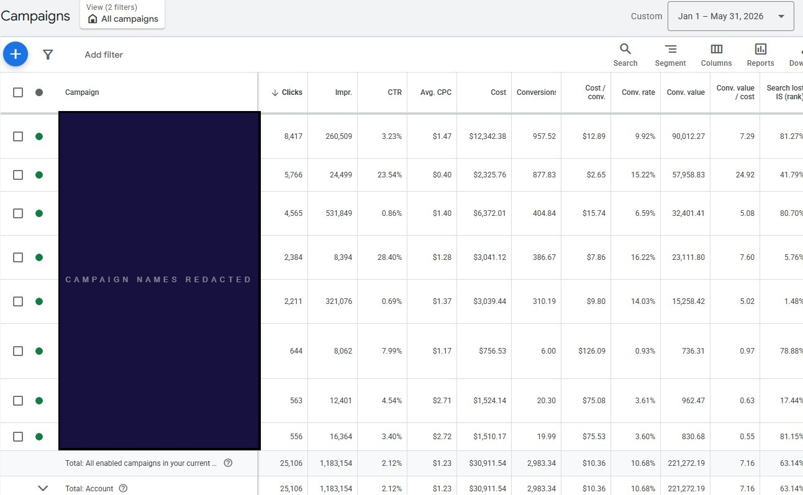

Campaign names withheld per client NDA. Conversion value is platform-reported by Google Ads.
The account had strong branded search volume. Brand-name queries were converting at 24.92×, but that existing demand is not the same thing as new-customer acquisition. The two were being measured in the same view, which made non-brand performance harder to diagnose on its own.
We reorganized the account into four roles: branded demand, high-intent non-brand Search, broader product discovery via Shopping and Performance Max, and dedicated upper-funnel testing. Across January–May 2026, eight campaigns generated $221K in platform-attributed revenue from $30.9K in managed spend. Brand Search recorded 24.92×; non-brand Search 7.29–7.60×; PMax + Shopping 5.02–5.08×; the upper-funnel test below 1×, as expected.
The spend level here is lower than many accounts in this portfolio. The patterns are not. Blended ROAS inflated by brand demand, acquisition campaigns measured without isolating their contribution, upper-funnel spend with no clear performance expectation set before it goes live: these appear in accounts at every budget level. The architecture documented here scales.
Brand-name searches and broader product or category searches were not separated. These query types convert at very different rates. Combining them made the blended result less useful for diagnosing acquisition performance on its own.
Higher-intent product searches and broader category discovery were evaluated within the same structure. Their conversion behavior differed. Separating them so higher-intent Search could be assessed independently made performance easier to read for both.
There was limited dedicated upper-funnel activity. Google Ads was primarily capturing demand close to conversion, not testing broader reach. We added a dedicated upper-funnel layer and evaluated it separately from Search and Shopping, with no expectation of matching Brand Search on immediate ROAS.
When branded and non-branded demand are mixed together, blended ROAS masks what acquisition is actually doing. The Growth Diagnostic examines where account-level performance is coming from and whether the campaign structure makes that visible.
See What the Diagnostic Covers →If you recognized your account in those findings, a diagnostic session surfaces the same structural gaps and gives you a prioritized plan to address them.
The 7.16× result included campaigns serving different stages of demand. Separating those roles made each one interpretable on its own terms.
Campaign-level ROAS figures are not interchangeable. These campaigns served different forms of demand. A lower reported ROAS does not mean a campaign was underperforming against its role.
The rebuild did not create the client's brand demand. It separated campaign responsibilities so branded demand, acquisition, product discovery, and upper-funnel investment could each be evaluated on its own terms.
Different forms of demand were difficult to evaluate independently.
We separated Brand Search so branded demand could be measured and managed independently from broader product and category searches. Non-brand performance became legible on its own.
Higher-intent product and category searches were split from broader discovery so each could be evaluated against relevant expectations. Bidding settings were reviewed against the conversion behavior of each group.
Verified customer purchase data was added as an audience signal in Performance Max. Audience signals guide Google's machine learning but do not restrict targeting to the uploaded list. Brand and query controls were used to reduce overlap between Performance Max and Search.
Discovery activity was launched separately from Search and Shopping to test broader reach. Its immediate platform ROAS was below 1×. It was evaluated on a broader set of indicators, not held to Brand Search benchmarks.
Each campaign was reviewed against its role and available conversion volume. Brand Search, acquisition, product discovery, and upper-funnel activity were judged against what each was built to do. No single shared ROAS target applied.
We did not create the brand equity behind the 24.92× Brand Search result. That demand belonged to the client.
Our work was to give it a clearer campaign responsibility so it could be measured separately. Acquisition activity could then be evaluated without a blended number obscuring the picture.
The account numbers are in the screenshot above. What the restructure added was a way to read them by role rather than as one undifferentiated result.
| Campaign Role | ROAS | Approx. Spend Share | Context |
|---|---|---|---|
| Brand Demand Branded Search | 24.92× | Highest-intent demand | Existing customers searching by brand name. High conversion rate reflects pre-existing demand, not acquisition cost. |
| High-Intent Acquisition Core Non-Brand Search | 7.29–7.60× | Product & category queries | High-intent product and category searches; evaluated independently from branded demand. Jan–May 2026. |
| Broader Product Discovery Performance Max + Shopping | 5.02–5.08× | Feed-led coverage | Range across PMax and Shopping campaigns. Customer Match signal applied to PMax at launch. |
| Upper-Funnel Testing Discovery / Consideration | Below 1× | Reach & consideration | Not benchmarked against Brand Search. Evaluated on reach and downstream indicators, not immediate platform ROAS. |
| Account Total · All 8 Campaigns Blended (Jan–May 2026) | 7.16× | $30.9K managed spend | $221K platform-attributed revenue. Blended figure includes Brand Search, which converts at a structurally higher rate than acquisition campaigns. |
The value of the rebuild was not a cleaner account diagram. It was knowing how much of the result came from existing brand demand, how much from new-customer acquisition, and which campaigns were doing what. Each could then be managed accordingly.